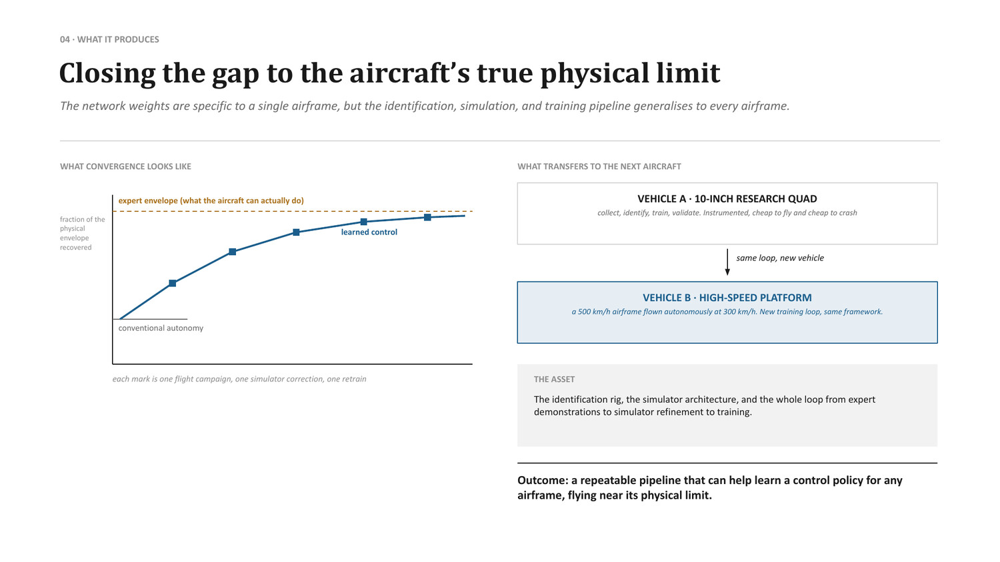

Research platforms where the stack is earned
Two non-commercial flight testbeds exist exclusively to generate transferable autonomy. Vehicle A is a densely instrumented 10-inch multirotor that isolates nonlinear aerodynamics and actuator latency at low financial risk. Vehicle B is a 500 km/h-class platform flown autonomously at 300 km/h. Together, they validate the simulation pipelines, direct-actuator neural policies, and deterministic runtimes deployed across the production portfolio.
Platform register
What these airframes are for
These aircraft are not commercial offerings. They are internal engineering instruments through which Apollyon advances its physical and algorithmic frontiers. Every aerodynamic limit and flight-control rate cited on product pages traces directly to telemetry recorded on these testbeds:
- System identification: Flight computers execute aggressive step responses and frequency sweeps while logging telemetry at 1,000 Hz. Engineers replay raw actuator commands through physics simulators, isolating unmodeled propeller downwash, airframe flexing, and voltage sag at the specific physical term rather than masking errors with PID gain tuning.
- Direct-actuator policy synthesis: Reinforcement learning agents train in simulation against refined dynamical models, directly predicting motor pulse-width-modulation commands rather than intermediate angular rates. Real flights test whether learned policies track the agile trajectories flown by human champion pilots.
- Hardware stress qualification: Boundary sorties uncover transient failures invisible on test benches: asymmetric motor heating, bus jitter during high current draws, aerodynamic servo stall under high dynamic pressure, and sensor saturation during terminal pitch-over maneuvers.
- Envelope expansion: Each flight campaign closes the sim-to-real gap, systematically expanding the flight envelope until autonomous software commands the full physical capability of the airframe.

The loop, in order
A parallel data flywheel feeds the same simulator: organised races and fleet flights put more vehicles at the limit and return limit-flight data at a scale no simulator can invent. Once that pool is large enough, the same logs train the policy directly through behaviour cloning, on top of what reinforcement learning finds in simulation.
What actually transfers
The identification rig, the simulator architecture, and the whole loop from expert demonstration through simulator refinement to training. The network weights are specific to a single airframe and do not transfer. The pipeline does — which is why a new airframe is a new package on the same backbone rather than a new programme.
The outcome is a repeatable procedure that can learn a control policy for any airframe, flying near its physical limit. Vehicle A proved the loop. Vehicle B proved it generalises to a vehicle an order of magnitude faster. Ahuti is the first weapon to consume it, and the terminal phase of Nightshade is the next.